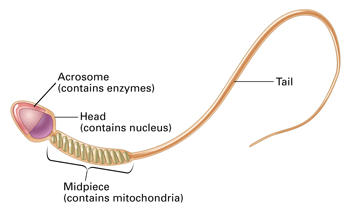
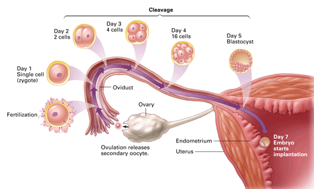
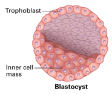

Objectives
- Describe the process of fertilization.
- Follow the human developmental process from a zygote to an embryo.
- Explain how fertilization can result in twins.
Key Terms
Human development begins when the nuclei of a sperm and egg cell fuse. After fertilization, the zygote (fertilized egg) begins dividing. At first all the cells look identical, but they eventually differentiate, forming a complex organism. In this section, you will read about the developmental events from fertilization through the time the embryo enters the uterus.
Fertilization
Fertilization occurs when the egg and sperm cells fuse. When a sperm cell penetrates the egg, meiosis II is completed and the ovum is formed. Within the ovum, the nuclei of the sperm and ovum fuse, forming a diploid nucleus. This fertilized egg cell is called a zygote. Successful fertilization requires living sperm in the oviduct on the day of, or shortly after, ovulation. On average of hundreds of millions sperm are deposited in the female's vagina during intercourse. Yet, only one sperm is necessary to fertilize the egg. Why so many sperm? Once deposited in the vagina, each sperm must travel approximately 18 cm to reach an oviduct. Only a few hundred sperm survive the trip due to a variety of factors including the 50/50 chance of entering the wrong oviduct (the one that doesn't contain the egg).
If an oocyte is present when sperm are in the oviduct, many sperm will attach to the oocyte's surface. Each sperm cell has a capsule at the forward end, called an acrosome, which contains enzymes that help the sperm cell penetrate the protective coats of the oocyte. Once one sperm successfully contacts the plasma membrane of the oocyte, a barrier forms on the oocyte's surface that prevents other sperm from entering. This ensures that just one sperm nucleus will be present to fuse with the ovum nucleus.
|  |
Figure 33-8
Numerous mitochondria provide energy to move the tail of a sperm cell, enabling the sperm to "swim" through the female reproductive system. Enzymes in the acrosome enable the sperm to penetrate the protective coats of the oocyte. |
Human Development: The First Week
Fertilization usually occurs in the region of the oviduct nearest the ovary. By about 36 hours after fertilization, a process called cleavage has begun, during which the zygote undergoes a series of rapid mitotic divisions (Figure 33-9). The process of cleavage produces a large number of daughter cells that serve as building blocks for the developing organism.
|  |
Figure 33-9
The process of cleavage occurs over several days following fertilization. The zygote begins to divide as it travels through the oviduct. By the time the cilia of the oviduct deliver the embryo to the uterus, the embryo is a ball of cells called a blastocyst. The blastocyst implants in the endometrium. |
By about the fifth day, cleavage has produced a ball of about 100 cells that has reached the uterus with the help of cilia in the oviduct. This ball of cells is called a blastocyst, a fluid-filled sphere consisting of an outer layer of cells and a group of cells inside the sphere (Figure 33-10). The outer layer of cells is called the trophoblast, and the cluster of cells within the sphere is called the inner cell mass. From the beginning of cleavage until the first body structures begin to appear (about nine weeks after fertilization), the developing organism is called an embryo.
|  |
Figure 33-10
A blastocyst forms nearly a week after fertilization. |
Within the uterus, trophoblast cells secrete enzymes that stimulate implantation, the imbedding of the blastocyst in the thickened endometrium that lines the uterus. The trophoblast grows, extending into the endometrium and anchoring the blastocyst in place. At the same time, the endometrium responds to implantation with rapid growth and completely surrounds the blastocyst. The trophoblast contributes to the development of membranes that will nourish and protect the embryo. The inner cell mass will eventually form the organism itself.
Twins and "Supertwins"
Although fertilization usually results in one embryo, occasionally multiple embryos are produced. Two embryos are called twins, and more than two are called "supertwins" (triplets, quadruplets, quintuplets, etc.). Twins and supertwins may be either fraternal or identical. Fraternal twins are the result of more than one egg being fertilized during an ovarian cycle. For this to happen, both ovaries must release an egg, or one ovary must release two eggs. Occasionally, one or both ovaries will release multiple eggs. If three or more of these eggs become fertilized, fraternal supertwins can result. Each zygote of fraternal twins and supertwins is formed from a different egg and sperm. As a result, the genetic information for fraternal twins is different for each individual, in the same way that brothers and sisters born at different times have different genetic material.
Identical twins are the result of one early-stage embryo splitting into two. For example, after the zygote divides for the first time, the two cells may separate and give rise to two embryos. This is an example of natural "cloning," or creating a genetic duplicate. Identical twins carry the same set of chromosomes from the original sperm and egg that formed the initial zygote. That is why identical siblings look so much alike and are the same gender. Although less likely, the embryo can split multiple times producing identical supertwins.
Concept Check 33.3
1. What role does a sperm cell's acrosome play in fertilization?
2. Describe the first week of human development.
3. Compare and contrast identical and fraternal twins.